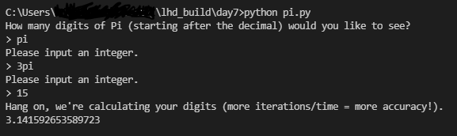

My project for the 7th and final day of LHD: Build was a Python script that calculates pi to the nth digit. I chose to use the Nilakantha Series, which converges quicker than the Leibniz Series, but if you try out my script you'll notice that it's still not the most accurate.
This submission is once again not configured to be live-demoed here, but feel free to try out the program by acquiring the Python file in the day7 folder of my lhd_build repo!
All you need if you want to try the script is to download the pi.py file (in the day7 folder of the GitHub repo), make sure you're in the directory containing that file (this depends on where you download/save the Python file), then run python pi.py and follow the instructions. Once the program starts calculating, it does take quite a long time (a couple of minutes) because it's iterating a loop 15000 times to try and improve accuracy. (And your laptop's fan might go a little crazy.)
Here's a peek at the script in action:
Anyhow, I do hope you have some fun with it!
Oh, and sorry for the misleading title — I guess I had a craving for pie and got carried away 😅